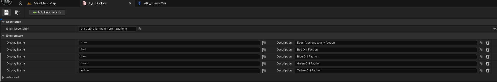
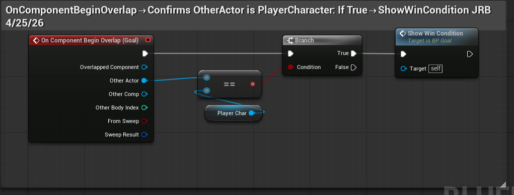
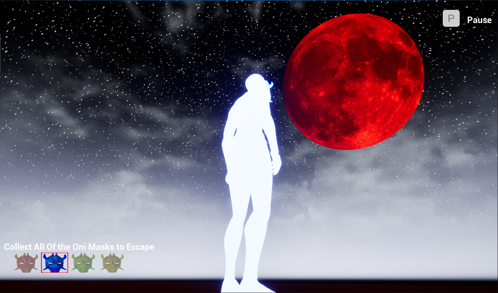

// 01
Purpose
Mask Survival started as a Global Game Jam concept. I had the idea and the vision but ran out of time to submit a complete game during the jam window. Rather than shelve it, I decided to see it through — to prove to myself that I could take a concept all the way to a publicly shipped product, solo, on a real-world schedule.
The project ran for 12 weeks while balancing a full-time day job. Those constraints were real and pushed me to work deliberately — every session had to count. The goal wasn't just to finish a game. It was to validate that I'm capable of the full loop: design, implementation, art, audio, and shipping.
The core design challenge was building stealth AI that felt genuinely threatening without being unfair. Four enemy factions each needed distinct behavior, real dual-sense perception, and the ability to coordinate — all within UE5 Blueprints, built entirely by one person.
// 02
Implementation
Each system was built to be modular and reusable. Click any thumbnail to view the Blueprint or media for that system.
-
Faction-Aware Behavior Trees Four enemy factions with Passive, Investigating, and Chasing states. Blackboard-based conditions with self-abort handle clean priority-driven transitions. The Behavior Tree drives AI state only — patrol movement is handled separately by incrementing spline points on arrival, not through the BT service.
 View BT
View BT
-
Sight & Sound via OnPerceptionUpdated A key lesson from this project: AI Perception cannot run on Tick. It must be entirely event-driven through OnTargetPerceptionUpdated. The full loop — iterating updated actors, breaking sensed data, checking sense class, and branching to HandleSenseSight or HandleSenseSound — only works correctly when driven by the component's own events, not polled manually.AI Perception Clip
-
Reusable Sense Check A shared CanSenseActor function queries AIPerception, loops through sensed actor info, checks sense class via a Select node (AISight vs AIHearing), and returns both a Sensed bool and the Stimulus. Centralizes perception logic and keeps it reusable across all enemy types.
 View Blueprint
View Blueprint
-
HandleSenseSound — State-Aware Response When a sound event fires the enemy plays an alert cue, checks current state via GetCurrentState, and uses Switch on E_AIState to decide whether to escalate to Investigating. Prevents already-chasing enemies from downgrading state on a new sound stimulus.
 View Blueprint
View Blueprint
-
BTService Tick + IncrementPatrolRoute Patrol routes use spline components. A BTService reads the current Blackboard patrol index on Tick, gets world position via GetLocationAtSplinePoint, projects it to navigation, and sets the patrol target vector. IncrementPatrolRoute handles bidirectional travel — direction 1 moves forward, -1 reverses — flipping at either spline end.
 View Blueprint
View Blueprint
-
Static Runtime Fixed Enemy Blockout Dynamic NavMesh runtime mode caused the mesh to shift the moment gameplay started, locking enemies out of an entire side of the level — even though placement looked correct in editor. Switching to Static runtime mode fixed it entirely. The in-editor spline patrol debug view confirmed enemy paths now covered the full intended territory.
 View Debug
View Debug
-
Struct-Based Collection System Four Oni masks tracked using a struct array with an enum defining each mask type. SetCollected checks whether a mask has been collected and swaps between dim and bright textures via SetBrushFromTexture. SetSelected toggles the IMGSelectionBox visibility via Branch so players always know which slot is active.

View Enum -
Goal Overlap & Lose Screen Flow Win triggers on OnComponentBeginOverlap — confirms the actor is PlayerCharacter via Branch, then calls ShowWinCondition. The lose flow creates WBP_LoseCondition, adds it to viewport, pauses the game, sets input to UI only, shows the cursor, and removes the objective widget from screen.

View Blueprint -
Oni Lantern — Blender to UE5 Original Oni lantern modeled in Blender using shrinkwrap modifier for rib topology and kanji embossing. Exported to UE5 with a translucent emissive material. Nanite disabled for correct translucency rendering.
 View Asset
View Asset
// 03
Impact
A complete solo development cycle — design, programming, 3D art, audio, and public shipping — delivered in 12 weeks alongside a full-time job.
12
Week Sprint
4
Enemy Factions
5
Original Audio Tracks
9
Major Systems
// 04
Media Gallery
Gameplay & Art

Blood moon gameplay screen Top-down level layout
Top-down level layout
 Blood moon — custom asset
Blood moon — custom asset
 Oni lantern — Blender wireframe
Oni lantern — final render
Oni lantern — Blender wireframe
Oni lantern — final render
Video Clips
Blueprint Documentation
Behavior Tree — full AI state machine
 OnPerceptionUpdated — full event loop
CanSenseActor function
HandleSenseSound Blueprint
IncrementPatrolRoute — spline point arrival
IncrementPatrolRoute — bidirectional
OnPerceptionUpdated — full event loop
CanSenseActor function
HandleSenseSound Blueprint
IncrementPatrolRoute — spline point arrival
IncrementPatrolRoute — bidirectional
 GetSplinePointAsWorldPosition
NavMesh — patrol debug view
GetSplinePointAsWorldPosition
NavMesh — patrol debug view
 SetCollected — texture swap
SetCollected — texture swap
 SetSelected — UI visibility
SetSelected — UI visibility
 Lose condition Blueprint
Lose condition Blueprint
// 05
Takeaway
Mask Survival proved something important — I can bring a game from concept to a publicly shipped product on my own, on a real-world schedule while managing other responsibilities. Finishing is a skill, and this project sharpened it.
The most significant technical challenges came from systems that only break at runtime. AI Perception cannot run on Tick — it needs to be entirely event-driven, and understanding why required going deeper into how UE5's perception component actually works rather than treating it as a black box. The NavMesh runtime issue was similar: the mesh looked correctly placed in editor but shifted the moment gameplay started, locking enemies out of half the level. Static runtime mode fixed it, but finding that required methodical investigation rather than guessing.
This was a strong first step toward what I am building next — an action RPG using the Gameplay Ability System, currently in the vertical slice phase. Mask Survival confirmed that I am fully capable of creating the art, systems, and audio I want to make as an individual developer. There are times for teams, but I strive to improve across every discipline of game creation. That mindset is what this project was really about.